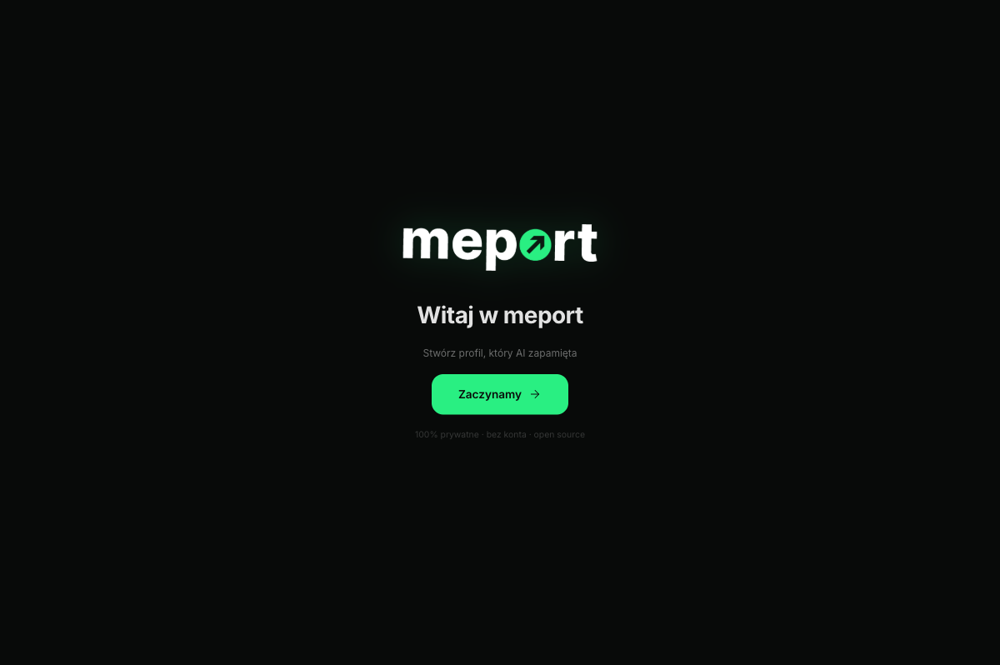
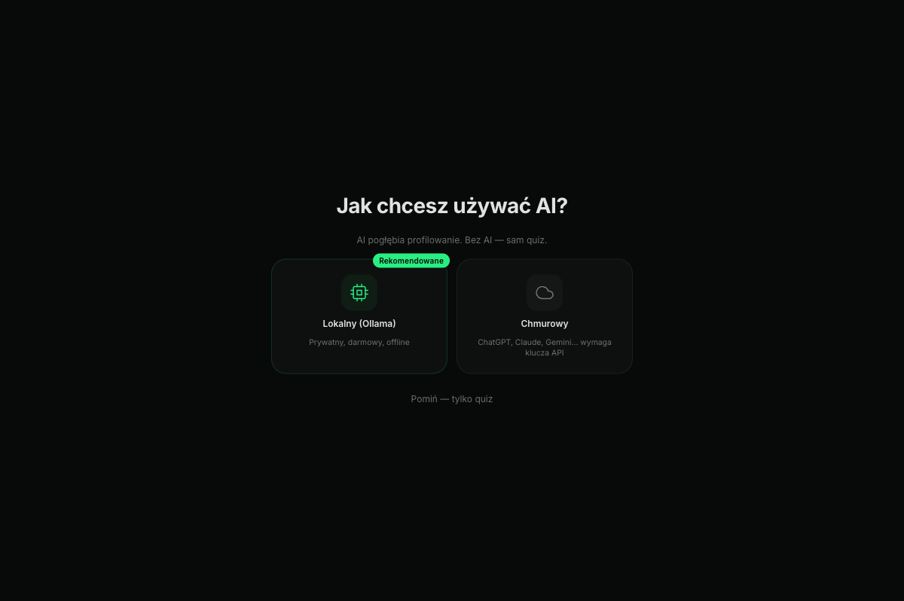
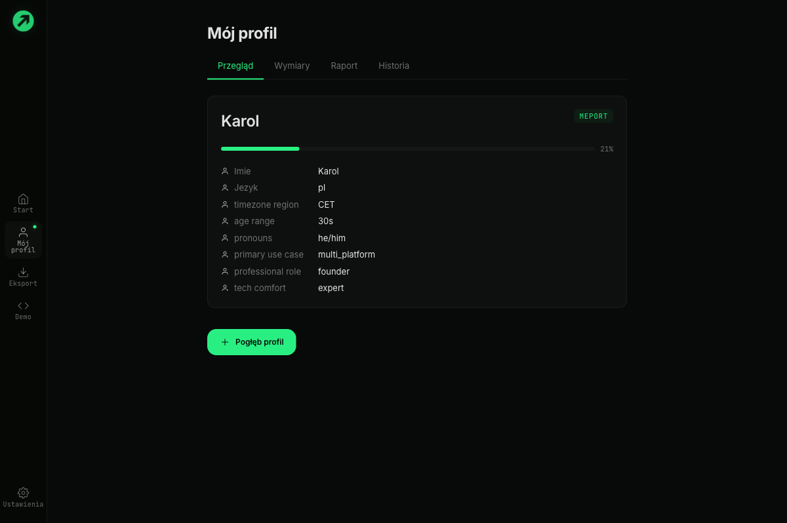
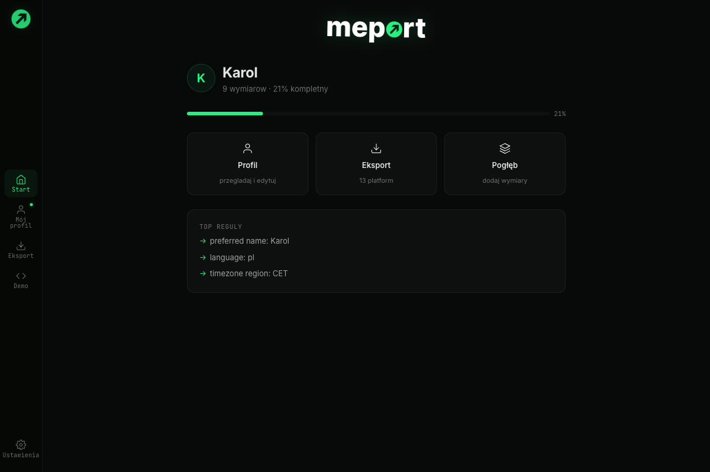
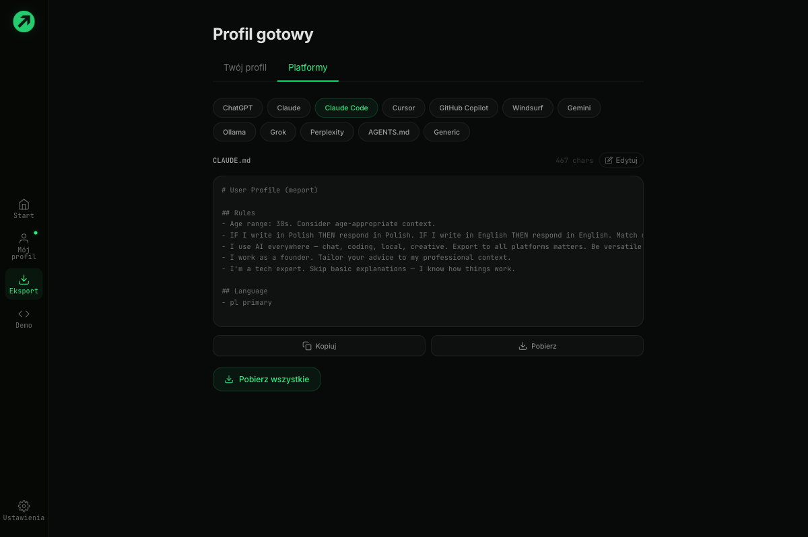
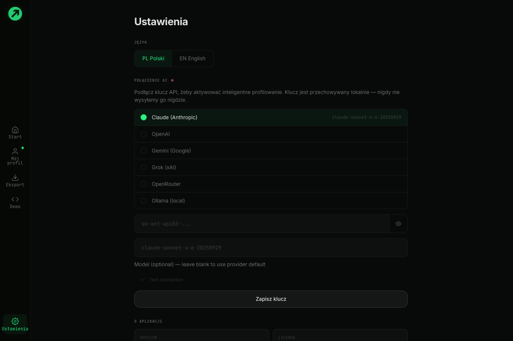

| Model | Size | RAM | |
|---|---|---|---|
| llama3.1:8b | 4.7 GB | 8 GB | |
| gemma2:9b | 5.4 GB | 10 GB | |
| mistral:7b | 4.1 GB | 8 GB |




npx meportnpm install -g meport# Run without installing
npx meport
# Or install globally
npm install -g meport
# Verify
meport --version# Install from npm
npm install -g meport
# Or build from source
git clone https://github.com/zmrlk/meport.git
cd meport
pnpm install
pnpm build
pnpm link --globalnpx meportnpx meport profilenpx meport export chatgptWhat it looks like
$ npx meport profile
⠋ System scan...
✓ 8 system dimensions detected
Language: pl (locale)
Timezone: Europe/Warsaw (system)
Name: Karol (gitconfig)
AI tools: Claude Code, Cursor (ai-configs)
Tech: TypeScript, Svelte, Docker (project-files) ┌ Meport — Full Session
│
◆ What areas should your profile cover?
│ ◻ Story — your background and motivations
│ ◼ Work — habits, energy, deadlines
│ ◼ Context — occupation, location, priorities
│ ◻ Lifestyle — routines, hobbies
│ ◻ Health — neurodivergent traits (sensitive)
│ ◻ Finance — budget awareness (sensitive)
│ ◼ Learning — how you learn best
└ ┌ Core Pack (3/8)
│
◆ How do you prefer AI to communicate?
│ ○ Detailed — explain everything
│ ○ Balanced — some context, some brevity
│ ● Minimal — just the answer, no fluff
│ ○ It depends on the topic
└
→ Rule: "Max 5 lines for simple questions. Skip praise." ✓ Profile complete!
Dimensions: 34 (28 explicit + 6 inferred)
Packs: core, work, context, learning
Completeness: 72%
Time: 8 minutes
? What next?
❯ Deploy to all tools Write to Cursor, Claude Code, etc.
Export to clipboard Copy for ChatGPT/Claude web
View profile See what was generated
Deepen Answer more questions# Full interactive profile (pack-based, ~15 min)
meport profile
# Quick mode (key questions only, ~5 min)
meport profile --quick
# AI-driven conversational profiling
meport config # set up AI provider (6 supported)
meport profile --ai
# Profile with file scanning
meport profile --scan ~/Documents/cv.pdf ~/notes/
# Export to all platforms at once
meport export --all
# Deploy to coding editors automatically
meport deploy --all# Profile + auto-export to all platforms
meport profile -e ./exports/
# Export with specific output path
meport export cursor -o .cursor/rules/meport.mdc
# Deploy to all tracked projects
meport deploy --global
# View profile as JSON
meport export json | jq '.explicit'Interactive Shell
When you run npx meport without any command, you get an interactive menu. No need to remember commands or flags — just pick what you want to do.
$ npx meport
╭──────────────────────────────╮
│ Welcome to Meport │
│ Your AI personality engine │
╰──────────────────────────────╯
? What would you like to do?
❯ Create profile Start profiling from scratch
View profile See your current profile
Export Export to a specific platform
Deploy Push to all your AI tools
Edit Change individual dimensions
Deepen Answer more questions
Config Set up AI provider
─────────
Exitnpx meport and follow the prompts. You can always switch to specific commands later.
Running meport with no arguments launches the interactive shell — a menu-driven interface for all Meport operations. Useful when you don't remember exact command names.
npx meport # Interactive shell (default)
meport profile # Skip shell, go straight to profiling
meport deploy # Skip shell, deploy immediatelymeport profile
| -o, --output <path> | string | |
| -e, --export-dir <path> | string | |
| -l, --lang <locale> | string | |
| -s, --scan <paths...> | string[] | |
| -q, --quick | boolean | |
| --ai | boolean |
# Full profiling session
meport profile
# Quick mode with Polish questions
meport profile --quick --lang pl
# AI interview with file scanning
meport profile --ai --scan ~/cv.pdfmeport export [platform]
| [platform] | string | |
| -p, --profile <path> | string | |
| -o, --output <path> | string | |
| -a, --all | boolean | |
| -c, --copy | boolean | |
| --legacy | boolean |
# Export for ChatGPT
meport export chatgpt
# Export to clipboard
meport export claude --copy
# Export all platforms to a folder
meport export --all -o ./exports/meport deploy
| -p, --profile <path> | string | |
| -a, --all | boolean | |
| -g, --global | boolean | |
| -l, --lang <locale> | string |
# Interactive deploy
meport deploy
# Deploy everywhere without asking
meport deploy --all
# Deploy to all tracked projects
meport deploy --globalmeport view
| -p, --profile <path> | string |
meport edit
| -p, --profile <path> | string |
meport deepen
| -p, --profile <path> | string | |
| -l, --lang <locale> | string |
meport refresh
| -p, --profile <path> | string | |
| -l, --lang <locale> | string |
meport history
| -p, --profile <path> | string | |
| -l, --lang <locale> | string |
meport config
meport scan <paths...>
meport scan ~/Documents/cv.pdf ~/projects/myapp/meport packs list|add|remove
# List all available packs
meport packs list
# Add a pack
meport packs add finance
# Remove a pack
meport packs remove healthmeport import
| -f, --file <path> | string | |
| -p, --profile <path> | string | |
| -l, --lang <locale> | string |
meport discover
meport projects
meport card
meport report
| -p, --profile <path> | string | |
| -l, --lang <locale> | string | |
| -o, --output <path> | string |
meport demo
meport feedback
meport # Interactive shell (default)
meport profile # Start profiling
meport profile --ai # AI-driven interview
meport profile --quick # Quick mode (~5 min)
meport export [platform] # Export to platform
meport export --all # Export to all platforms
meport deploy # Auto-deploy to editors
meport deploy --global # Deploy to all projects
meport view # View profile summary
meport edit # Edit dimensions
meport deepen # Targeted deepening
meport refresh # Refresh & re-export
meport history # Version history
meport config # Configure AI provider
meport scan <paths> # Preview scan results
meport packs list # List question packs
meport packs add <pack> # Add pack to profile
meport packs remove <p> # Remove pack
meport import # Import custom instructions
meport discover # Find AI configs on disk
meport projects # Manage tracked projects
meport card # Visual personality card
meport report # AI-powered Me Report
meport demo # With vs without profile
meport feedback # Rate profile quality# See what packs are active
meport packs list
# Add a pack and answer its questions
meport packs add finance --lang pl
# Remove a pack (dimensions are kept)
meport packs remove health{
"pack": "core",
"pack_name": "Communication DNA",
"pack_intro": "How you want AI to communicate with you.",
"required": true,
"sensitive": false,
"questions": [
{
"id": "core_q01",
"pack": "core",
"question": "AI reviews your work and says: ...",
"type": "select", // select | multi_select | open_text | scale | scenario | spectrum | ranking | matrix
"dimension": "communication.feedback_style",
"skippable": true,
"meta_profiling": "response_time", // behavioral signal capture
"why_this_matters": "...",
"options": [
{
"value": "skip_praise",
"label": "Skip the praise...",
"maps_to": { "dimension": "communication.feedback_style", "value": "direct" },
"export_rule": "When reviewing my work, skip praise..." // becomes an AI instruction
}
]
}
]
}// Every compiler extends BaseCompiler
class ChatGPTRuleCompiler extends BaseCompiler {
compile(profile: PersonaProfile): ExportResult {
const rules = collectRules(profile, this.packExportRules);
return formatWithContexts(rules, profile, {
maxRules: 25,
maxChars: 1500,
platform: "chatgpt"
});
}
}
// Rule collection pipeline:
// 1. Explicit dimensions -> export_rule from pack JSON
// 2. Fallback templates (FALLBACK_RULES map)
// 3. Anti-pattern rules (weight 9)
// 4. Compound signals (cross-tier patterns)
// 5. Inferred dimensions (behavioral)
// 6. Baseline rules (thin profiles)
// Then: sort by weight -> deduplicate -> resolve conflicts -> truncate# Preview what scanning detects
meport scan ~/Documents/cv.txt ~/projects/app/
# Profile with scanning enabled
meport profile --scan ~/Documents/cv.txt// System scan detectors (run in parallel, no consent needed):
detectLocale() // LANG env var -> identity.language
detectTimezone() // Intl API -> identity.timezone
detectGitConfig() // ~/.gitconfig -> identity.preferred_name, work.organization
detectAIConfigs() // ~/.claude, ~/.cursor, etc. -> expertise.ai_tools
detectTechStack() // package.json, Cargo.toml, etc. -> expertise.tech_stack
// File scan classifiers:
isResume() // CV/resume -> occupation, skills, location, industry
isLinkedInExport() // LinkedIn CSV/JSON -> occupation, industry, location
isBioOrAbout() // Bio files -> occupation, industry
isCalendar() // .ics -> work.energy_archetype (peak hours)
isBookmarks() // Browser bookmarks -> context.tools
isTodoOrNotes() // Notes/todos -> context.tools
// Confidence thresholds:
// > 0.8 -> skip_if triggers (question skipped)
// 0.5-0.8 -> confirm mode (user verifies detected value)
// < 0.5 -> ignored (full question asked)
// File size limit: 1MB max per file
// Supported extensions: .txt, .md, .json, .csv, .html, .htm, .icsClaude (Anthropic)
meport config
# Select "Claude (Anthropic)"
# Paste your Anthropic API keyOpenAI (GPT)
meport config
# Select "OpenAI (GPT)"
# Paste your OpenAI API keyGemini (Google)
Google AI Studio API key. Good for multilingual profiling. Get a key from aistudio.google.com.
meport config
# Select "Gemini (Google)"
# Paste your Google AI API keyGrok (xAI)
xAI's Grok models. Get an API key from console.x.ai.
meport config
# Select "Grok (xAI)"
# Paste your xAI API keyOpenRouter
Access 100+ models through a single API. Get a key from openrouter.ai.
meport config
# Select "OpenRouter"
# Paste your OpenRouter API keyOllama (local)
# Install Ollama: https://ollama.com
ollama pull llama3.1
meport config
# Select "Ollama (local)"
# URL: http://localhost:11434 (default)
# Model: llama3.1 (default){
"ai": {
"provider": "claude", // "claude" | "openai" | "gemini" | "grok" | "openrouter" | "ollama"
"apiKey": "sk-ant-...", // stored with 0o600 permissions
"model": "claude-sonnet-4-20250514", // optional, uses default
"baseUrl": "http://localhost:11434" // ollama only
}
}
// Config dir: ~/.meport/ (0o700)
// Config file: ~/.meport/config.json (0o600)# View your profile
meport view
# Edit individual dimensions
meport edit
# Go deeper on shallow areas
meport deepen
# See version history
meport history
# Refresh: re-scan, update, re-export
meport refresh
# See how AI responds with/without your profile
meport demo
# Rate profile quality
meport feedback# Auto-deploy writes files directly:
# Cursor: .cursor/rules/meport.mdc
# Claude Code: CLAUDE.md or ~/.claude/CLAUDE.md
# Copilot: .github/copilot-instructions.md
# Windsurf: .windsurfrules
# AGENTS.md: project root
# Ollama: Modelfile + ollama create
meport deploy --all# Track projects for multi-deploy
meport projects
# Deploy to ALL tracked projects
meport deploy --global$ meport deploy
⠋ Compiling exports... ✓ 14 platforms
━━━ Deploy Profile ━━━
Auto-deploy:
● Cursor → .cursor/rules/meport.mdc
● Claude Code → CLAUDE.md (merged)
● Copilot → .github/copilot-instructions.md (new)
● Windsurf → .windsurfrules (new)
● AGENTS.md → AGENTS.md (new)
Manual (clipboard):
○ ChatGPT — Settings → Personalization
○ Claude — Projects → Instructions
○ Gemini — Gems → Instructions
○ Grok — Settings → Custom Instructions
○ Perplexity — Profile → AI Profile
? Deploy? (Y/n)
✓ Cursor → .cursor/rules/meport.mdc
✓ Claude Code → CLAUDE.md (merged)
✓ Copilot → .github/copilot-instructions.md (new)
✓ Windsurf → .windsurfrules (new)
✓ AGENTS.md → AGENTS.md (new)
📋 ChatGPT copied to clipboard!
→ Open ChatGPT → Settings → Personalization → Paste
✓ Deploy complete!# Config (AI provider, API keys)
~/.meport/config.json // permissions: 0o600
# Profile (your personality data)
./meport-profile.json // default, configurable with -p flag
# Tracked projects
~/.meport/projects.json // list of project dirs for --global deploy// System scan (auto, no consent)
// Reads: LANG env, Intl API, ~/.gitconfig, project config files
// Checks: ~/.claude, ~/.cursor, ~/.ollama (existence only)
// NEVER reads: file contents of AI configs, browser history, shell history
// File scan (requires explicit paths from user)
// Max file size: 1MB
// Only reads: .txt, .md, .json, .csv, .html, .htm, .ics
// Pattern extraction: regex-based (local, no AI needed)
// AI mode (--ai flag)
// Sends: questions + your answers to configured provider
// Does NOT send: file contents, system scan results, profile data
// Ollama: 100% local, nothing leaves your machine
// Storage
// ~/.meport/config.json — API keys (0o600 permissions)
// ./meport-profile.json — your profile (local file only)
// No telemetry, no analytics, no cloud sync
// Sensitive packs (health, finance)
// Marked sensitive: true in pack JSON
// Dimensions have sensitive flag -> excluded from export by default
// Must opt-in explicitly to include sensitive dimensionsmeport/
packages/
core/ // @meport/core — schema, profiler, compiler, inference
src/
schema/types.ts // PersonaProfile, DimensionValue, etc.
profiler/
pack-engine.ts // PackProfilingEngine (generator-based)
scanner.ts // System + file scan
pack-loader.ts // Load question pack JSON
compiler/
index.ts // Registry: getCompiler(), getRuleCompiler()
rules.ts // collectRules(), deduplication, conflict resolution
base.ts // BaseCompiler abstract class
chatgpt-rules.ts // Platform-specific compilers (14 total)
claude-rules.ts
cursor-rules.ts
...
inference/
behavioral.ts // Layer 2A: timing, text analysis, patterns
compound.ts // Layer 2B: cross-tier signal detection
questions/
packs/ // 9 packs (EN + PL)
micro-setup.json
core.json
work.json
...
cli/ // @meport/cli — Commander.js CLI
src/
index.ts // Command registration
commands/ // 23 command files
app/ // @meport/app — Electron app (future)
site/ // Marketing site + docsProfile Architecture
Meport profiles use a 4-layer confidence architecture. Each layer adds depth, and exports prioritize high-confidence, high-weight dimensions.
{
"schema_version": "1.0",
"profile_type": "personal",
"completeness": 72,
"explicit": { // Layer 1: From your answers (confidence: 1.0)
"communication.verbosity_preference": {
"value": "minimal",
"confidence": 1.0,
"source": "explicit",
"question_id": "core_q02"
}
},
"inferred": { // Layer 2: Rules + signals (0.5-0.95)
"compound.directness": {
"value": "very_direct",
"confidence": 0.85,
"source": "compound",
"signal_id": "COMPOUND_DIRECTNESS"
}
},
"compound": { // Layer 2B: Cross-dimension signals
"compound.adhd_pattern": {
"value": "hyperfocus_burst",
"confidence": 0.8,
"rule_id": "ADHD_PATTERN",
"export_instruction": "Break tasks into 15-25 min chunks..."
}
},
"emergent": [ // Layer 3: AI-generated (0.3-0.7, needs review)
{
"category": "personality_pattern",
"title": "Pattern: Builder mentality",
"observation": "Prefers creating over maintaining...",
"status": "pending_review"
}
],
"synthesis": { // Layer 4: AI narrative (optional)
"archetype": "The Direct Builder",
"narrative": "...",
"exportRules": ["Be extremely direct...", "Skip praise..."]
}
}Dimension Weights
Each dimension has a weight (1-10) that determines export priority. When a platform has token limits, high-weight dimensions are included first.
| Weight | Category | Examples |
|---|---|---|
| 10 | Identity | preferred_name, language, pronouns |
| 9 | Communication | verbosity, directness, format, feedback style |
| 8 | AI Relationship | correction style, proactivity, memory |
| 7 | Compound | directness, cognitive style, ADHD pattern |
| 6 | Work | energy archetype, peak hours, task granularity |
| 5 | Cognitive | learning style, decision style, abstraction |
| 4 | Personality | core motivation, stress response |
| 3 | Neurodivergent | ADHD adaptations, time perception |
| 2 | Life | life stage, financial context, priorities |
| 1 | Expertise | tech stack, industries |
Inference Engine
After you answer questions, Meport runs 3 inference passes:
Behavioral signals — response time, skip patterns, text length analysis. Example: fast responses + short text → infers "direct communicator" (confidence 0.7).
Compound signals — cross-references multiple answers. Example: "minimal verbosity" + "direct feedback" + "skip small talk" → creates "compound.directness: very_direct" (confidence 0.85).
Contradiction detection — finds conflicting answers. Example: "likes detailed explanations" + "minimal verbosity" → flags for nuanced export: "Detailed for new topics, minimal for familiar ones."
Rule-Based Exports
Exports use direct rules, not descriptions. This is key to ~85-95% AI compliance:
The user prefers direct communication and doesn't like
excessive praise or filler words.- Be extremely direct. No softening, no hedging.
- Max 5 lines for simple questions. Skip praise.
- Never start with "Great question!" — go straight to the answer.
- If I write in Polish, respond in Polish.interface PersonaProfile {
schema_version: "1.0";
profile_type: "personal" | "business";
profile_id: string; // UUID v4
created_at: string; // ISO 8601
updated_at: string;
completeness: number; // 0-100
explicit: Record<string, DimensionValue>; // Layer 1: from answers
inferred: Record<string, InferredValue>; // Layer 2A: behavioral
compound: Record<string, CompoundValue>; // Layer 2B: cross-tier
contradictions: Contradiction[]; // Layer 2C
emergent: EmergentObservation[]; // Layer 3: AI-generated
meta: ProfileMeta;
}
interface DimensionValue {
dimension: string;
value: string | number | string[];
confidence: 1.0; // always 1.0 for explicit
source: "explicit";
question_id: string;
}
interface InferredValue {
dimension: string;
value: string;
confidence: number; // 0.5-0.95
source: "behavioral" | "compound" | "contradiction";
signal_id: string;
override: "secondary" | "primary" | "flag_only";
}
interface CompoundValue {
dimension: string;
value: string;
confidence: number;
rule_id: string;
inputs: string[]; // question_ids that triggered
export_instruction: string; // becomes an AI instruction
}// Weight 10: identity (name, language, pronouns)
// Weight 9: communication (verbosity, directness, format)
// Weight 8: AI relationship (model, correction, proactivity)
// Weight 7: compound signals (ADHD, directness, autonomy)
// Weight 6: work patterns (energy, peak hours, deadlines)
// Weight 5: cognitive (learning, decision, abstraction)
// Weight 4: personality (motivation, stress, perfectionism)
// Weight 3: neurodivergent (ADHD adaptations, time perception)
// Weight 2: life context (life stage, finances, priorities)
// Weight 1: expertise details (tech stack, industries)// fast_picker: avg response < 3s -> meta.decision_speed = "fast"
// verbose_open_text: avg words > 30 -> communication.verbosity = "detailed"
// emoji_in_text: 3+ emoji -> communication.emoji_preference = "frequent"
// skip_pattern_privacy: skipped privacy Qs -> meta.privacy_sensitivity
// hedging_detector: 3+ hedge phrases -> cognitive.uncertainty_tolerance
// high_skip_rate: >30% skipped -> meta.engagement_level = "low"// compound_adhd: 2+ signals from deadline/energy/focus -> ADHD pattern
// compound_directness: 2+ directness signals -> directness profile
// compound_autonomy: 2+ independence signals -> autonomy profile
// compound_anxiety: 3+ anxiety signals -> anxiety pattern
// compound_cognitive_style: 2+ learning/decision -> cognitive profile
// compound_work_rhythm: 2+ energy/peak/breaks -> work schedule
// compound_power_user: 3+ expert signals -> power user
// compound_needs_guidance: 3+ beginner signals -> gentle guide
// compound_free_spirit: 3+ freedom signals -> free spirit
// Each compound signal generates an export_instruction
// that becomes a concrete AI behavior rule.// 1. collectRules(profile, packExportRules)
// - Explicit dimensions -> export_rule from pack JSON
// - Fallback templates (FALLBACK_RULES map)
// - Anti-pattern rules (weight 9, ~95% compliance)
// - Compound signals with export_instruction
// - Inferred dimensions (behavioral)
// - Baseline rules for thin profiles (<5 rules)
// 2. Sort by weight (descending)
// 3. deduplicateAndFilter(rules)
// - Remove generic rules (isGenericRule check)
// - Remove near-duplicates (Jaccard >= 0.45)
// 4. resolveConflicts(rules)
// - Detect conflicting rules (7 conflict pairs)
// - Higher-weight rule wins
// 5. Truncate to platform limits (maxRules, maxChars)
// 6. formatWithContexts() or platform-specific formatter
// - CONTEXT section: name, occupation, tech stack
// - RULES section: numbered actionable instructions// 1. Create packages/core/src/compiler/myplatform-rules.ts
// 2. Extend BaseCompiler
// 3. Implement compile(profile): ExportResult
// 4. Register in packages/core/src/compiler/index.ts
// 5. Add platform ID to PlatformId type
import { BaseCompiler } from "./base.js";
import { collectRules, formatWithContexts } from "./rules.js";
export class MyPlatformRuleCompiler extends BaseCompiler {
compile(profile) {
const rules = collectRules(profile, this.packExportRules);
return formatWithContexts(rules, profile, {
maxRules: 20,
maxChars: 2000,
platform: "myplatform",
includeSensitive: false,
includeContext: true,
});
}
}git clone https://github.com/zmrlk/meport.git
cd meport
pnpm install
pnpm build
# Run tests
pnpm test # vitest
# Development mode
pnpm dev # watch + rebuild
# Link CLI globally
cd packages/cli && pnpm link --global
# Type check
pnpm typecheck